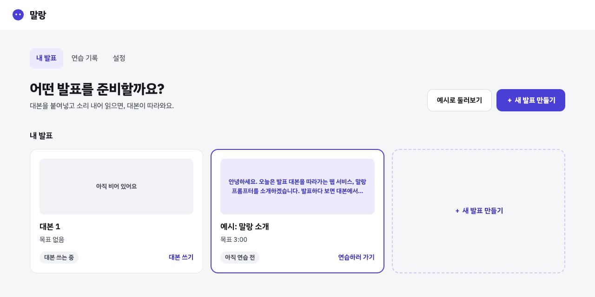
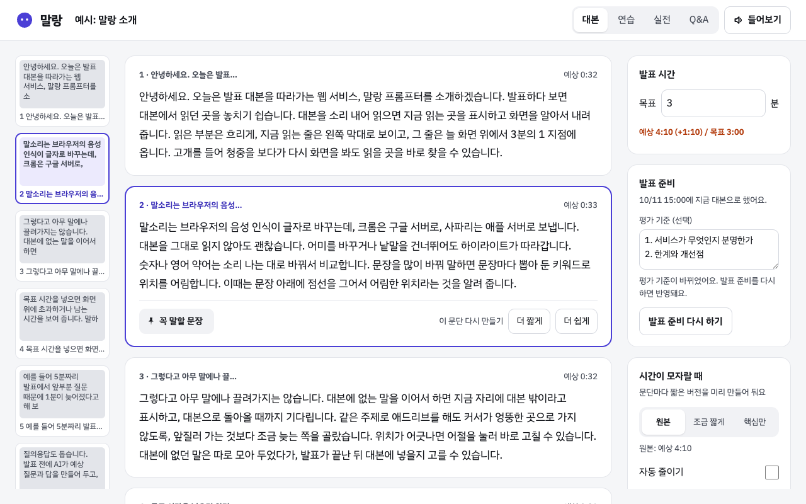
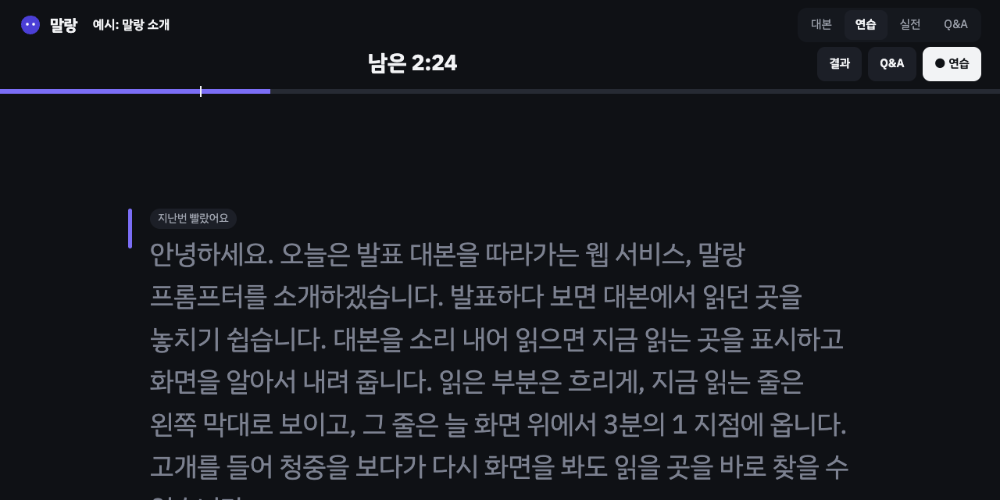
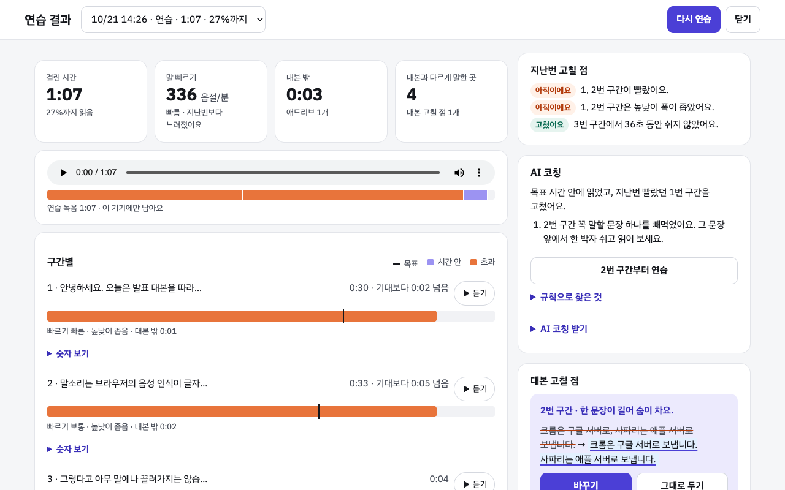
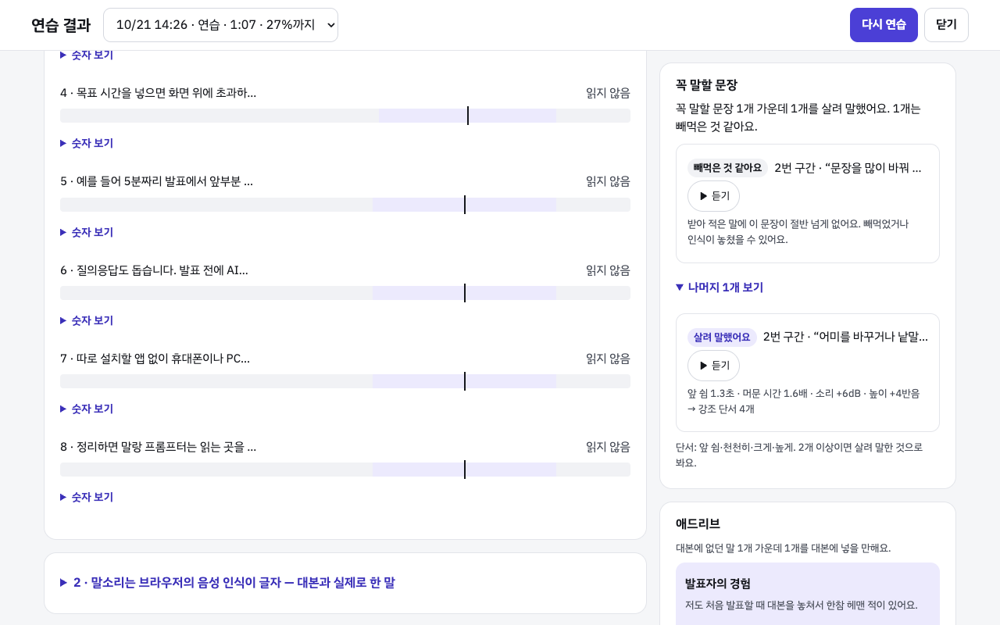
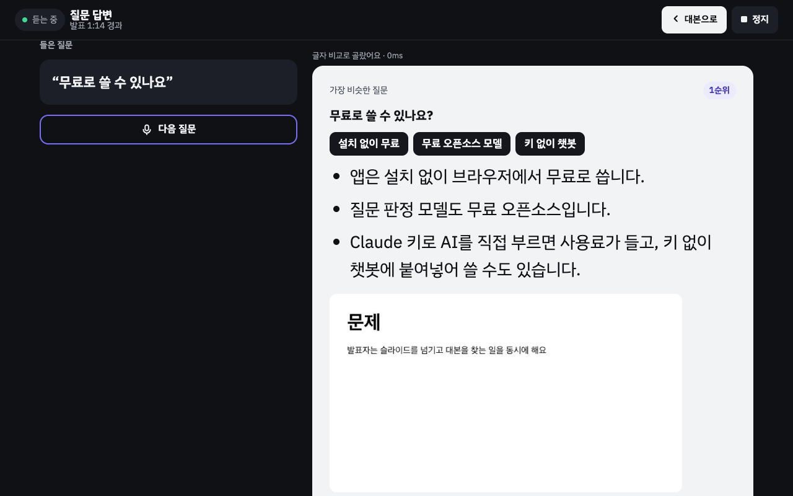
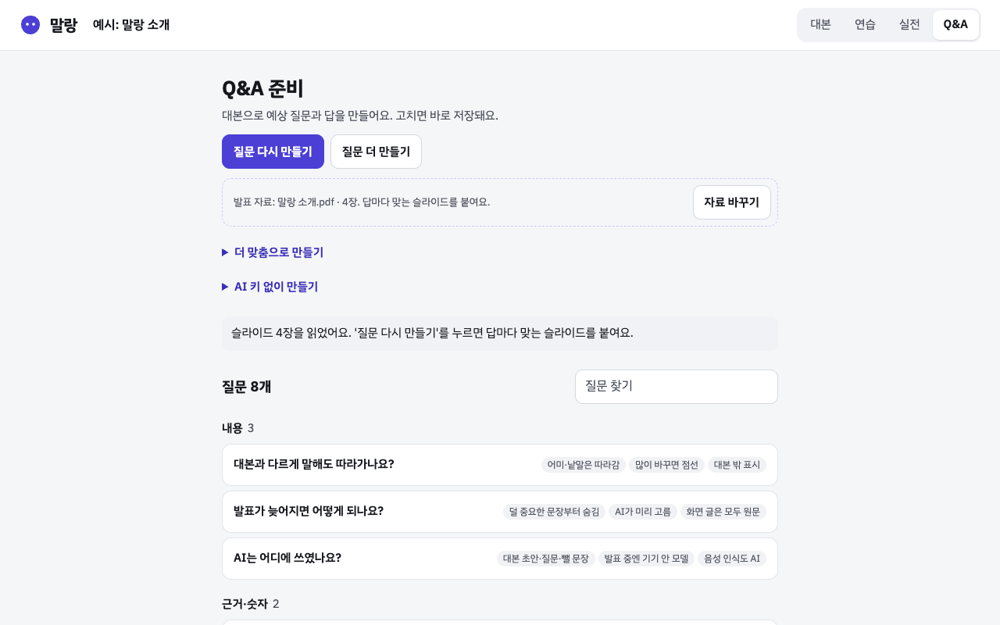

소리 내어 읽으면 대본이 따라오는 발표 프롬프터예요. 가입 없이 Chrome에서 써요.
앱 열기첫 화면에서 발표를 골라요. 메뉴는 따로 없어요.
AI 키, 글자 크기, 파일 가져오기는 홈의 '설정'에 있어요.

자료를 올리면 AI가 대본을 쓰고, 직접 붙여넣어도 돼요.

읽으면 따라오고, 지난번 고칠 점을 문단 위에 보여 줘요.

고칠 점과 나아진 점을 한 화면에서 봐요.
AI 키가 있으면 정지할 때 AI 코칭과 애드리브 정리를 바로 받아요. 다시 보려면 발표 화면의 '결과'를 눌러요.


실전은 처음엔 대본만 보여요.
'Q&A'를 켜면 질문을 따라 말하기만 하면 돼요.
맞는 질문이 없으면 '해당 없음'을 눌러 관련 대본 문장으로 가요.

'질문 만들기'를 한 번 누르면 질문과 답이 분류별로 생겨요.

Chrome 주소창 왼쪽 아이콘을 눌러 마이크를 허용하고 새로고침해 주세요.
마이크 단추가 '다시 듣기'면 눌러 주세요. 읽을 단어를 누르면 거기서 다시 따라와요.
돼요. AI가 필요한 곳마다 'AI 키 없이 쓰기'에서 프롬프트를 복사해 챗봇에 붙여넣고, 받은 답을 '결과 붙여넣기'에 넣으면 돼요. 키를 넣으면(홈 › '설정' › 'AI 키') 단추 한 번으로 돼요. 쓴 만큼 요금이 들어요.
한 번 열었던 기기라면 열려요. 음성 인식은 안 돼서 화살표 단추로 넘겨요.
'대본' 탭 아래 '파일로 내보내기'로 받고, 그 기기의 홈 › '설정' › '파일 가져오기'로 열어 주세요. 녹음과 붙인 그림은 옮겨지지 않아요.
실제 마이크와 휴대폰으로는 아직 확인하지 못했어요. 발표 전날 쓸 기기로 끝까지 연습해 보세요.